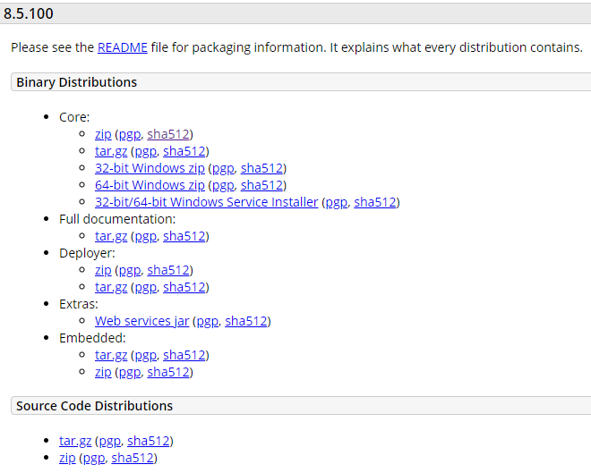

1. 重装系统之后端开发

致读者: 点击上方 “雪之梦技术驿站” → 点击右上角“ ... ”→ 点选“设为星标★ ” 加上星标，就不会找不到我啦！
偷偷溜进文章的小广告，别害羞，点进去瞅瞅，说不定能发现什么宝藏呢！文末那个也别错过，说不定是通往秘密花园的钥匙哦！
1.1. 前言
前一阵子电脑出现故障,折腾了好久也没得解决问题.遇到问题如果重启电脑不能解决,那么就只能重装系统了.
因此,开发环境又要重头再来,环境配置简单但复杂,更有甚者官网下载的版本都是最新版本.所以整理出常用的开发环境的安装配置,并且提供直接下载链接以防下次意外!
1.2. Sublime 文本编辑器
颜值高,支持丰富的插件,简单高效的文本编辑器!
1.3. Nodejs 开发环境
如果需要兼容不同项目的不同 Nodejs 版本,推荐安装 nvm 包管理器,实现随时切换不同版本.
# 环境变量
NODE_PATH
I:\nodejs\node_modules
#修改npm全局（-g）模块安装所在路径
npm config set prefix I:\nodejs
#修改缓存cache的路径（ps：如果不修改，则默认到C盘位置C:\Users\Administrator\AppData\Roaming\npm）
npm config set cache I:\nodejs\node_cache
# 查看当前使用的镜像地址
npm config get registry
# 设置镜像源
npm config set registry https://registry.npm.taobao.org
npm config set registry https://registry.npmjs.org
详细安装配置教程可参考: Node.js安装及环境配置——window10
1.4. Python 开发环境
# 使用国内镜像加速下载
python -m pip install --upgrade pip
pip install -i http://mirrors.aliyun.com/pypi/simple --trusted-host mirrors.aliyun.com -r requirements.txt
1.5. Java 开发环境

关键点: “我的电脑” 右键菜单--->属性--->高级--->环境变量--->系统变量-->新建
JAVA_HOME
I:\Java\jdk-8\jdk1.8.0_291
CALSS_PATH
.;%JAVA_HOME%\lib\dt.jar;%JAVA_HOME%\lib\tools.jar;
PATH
;%JAVA_HOME%\bin;%JAVA_HOME%\jre\bin
java -version
详细安装配置教程可参考: Java环境安装配置步骤介绍
1.6. Tomcat 开发环境

关键点: “我的电脑” 右键菜单--->属性--->高级--->环境变量--->系统变量-->新建
CATALINA_HOME
I:\tomcat\Tomcat 8.0
Path
;%CATALINA_HOME%\bin
catalina version
详细安装配置教程可参考: Tomcat安装与配置（详细教程）
1.7. maven 开发环境

关键点: “我的电脑” 右键菜单--->属性--->高级--->环境变量--->系统变量-->新建
MAVEN_HOME
I:\maven\apache-maven-3.6.3
Path
;%MAVEN_HOME%\bin
mvn -version
settings.xml
<localRepository>I:\maven\localRepository</localRepository>
<mirror>
<id>alimaven</id>
<name>aliyun-maven</name>
<mirrorOf>central</mirrorOf>
<url>http://maven.aliyun.com/nexus/content/groups/public</url>
</mirror>
详细安装配置教程可参考: Maven安装配置全教程
1.8. Git 客户端
1.9. svn 客户端
1.10. redis-desktop-manager 客户端
1.11. Navicat 数据库管理软件
🌟 工具名称：Navicat
🌐 使用环境：无需梯子,无需注册 🔗 工具地址：扫码关注回复Navicat关键词
下载安装即可直接使用,简答粗暴的安装方式谁能不爱呢?
链接：https://pan.baidu.com/s/1sxOKLXyCXv9yzzN5LOYQdA?pwd=9va4
提取码：9va4
1.12. IntelliJ IDEA 旗舰版开发软件
一款领先的 Java 和 Kotlin IDE,高颜值,很智能,插件丰富,Java开发必备.同样也是拆箱即用!
🌟 工具名称：IDEA 🌐 使用环境：无需梯子,无需注册 🔗 工具地址：扫码关注回复IDEA关键词
链接：https://pan.baidu.com/s/1P-fcDKcMEfEBvzTgUH-ZVg?pwd=igw4
提取码：igw4
1.13. 总结
本文主要分享了常见的开发环境安装配置的关键点,涉及到Nodejs , Python 以及Java等相关环境.
不仅提供了官网下载链接也支持私人上传后分享链接下载,如果链接失效,后台私信回复关键词可获取下载地址.
Sublime强大的文本编辑器,除了Java外的开发全靠它!Navcat数据库管理软件,官网免费试用,私信链接支持无限期试用IDEAJava开发集成环境,官网免费试用,私信链接支持无限期试用
1.14. 往期精彩文章
1.15. 欢迎扫码关注
欢迎扫码关注,私信回复『加群』一起交流技术
作者: 雪之梦技术驿站
来源: 雪之梦技术驿站
本文原创发布于「雪之梦技术驿站」,转载请注明出处,谢谢合作!